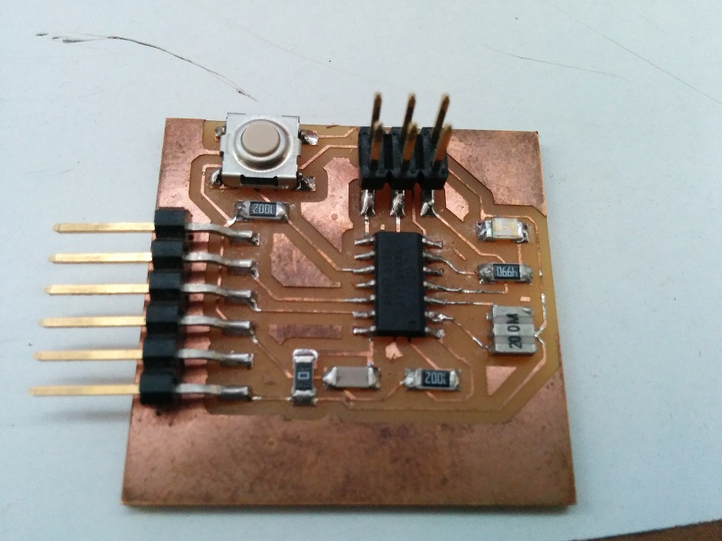
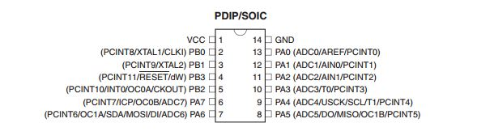
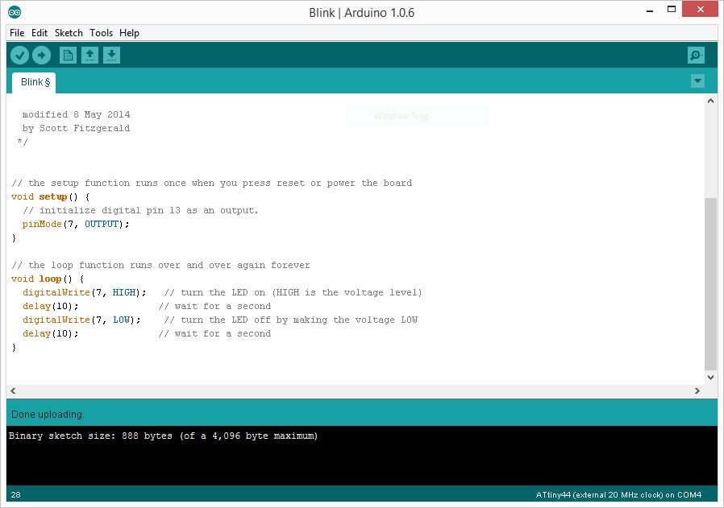
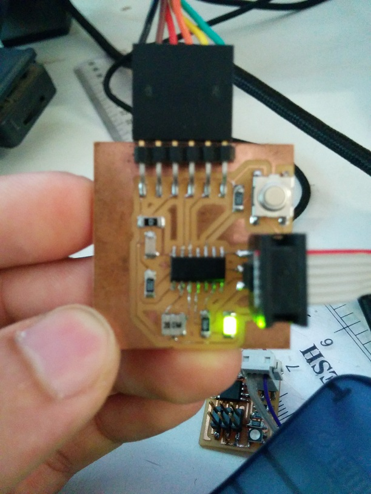
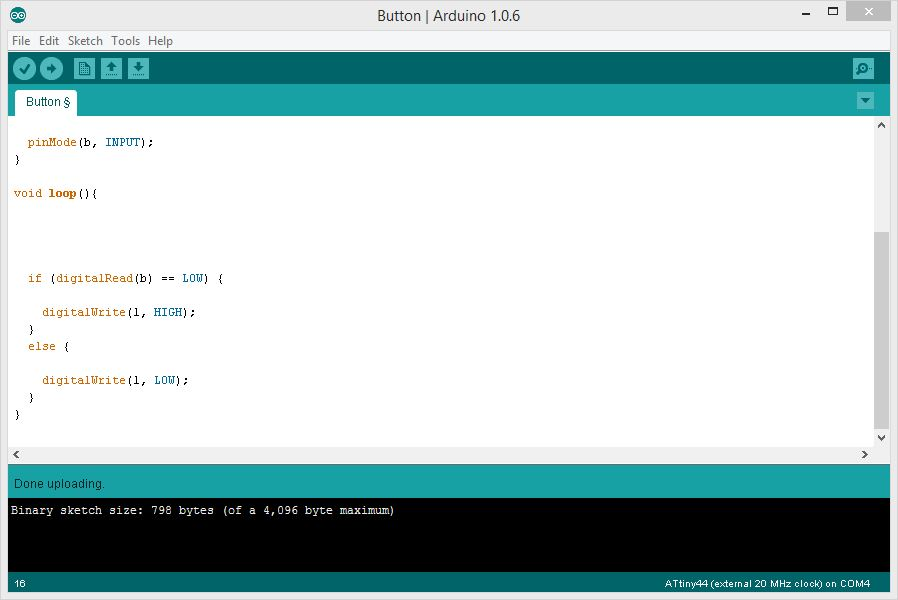
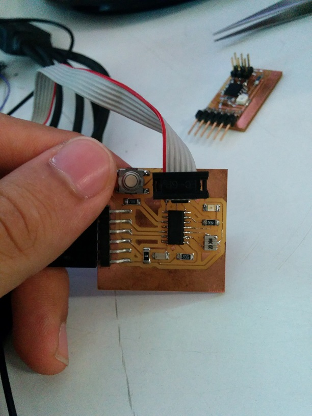
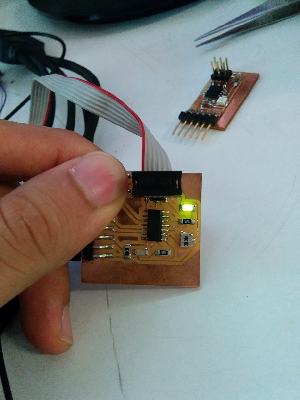

Last week we modified the schematics of, and made the "echo hello board". This weeks assignment is to understand the microcontroller, read its data sheet, and make it do something.
To start off i took a good look at the data sheet of the ATtiny44
as far as my understanding goes , this is what the above mentioned pins do:
After digging aroung a little, I found that the Arduino IDE would be the simplest environment to start with, because it could compile the code before uploading
Interesting to note, is that the ATtiny does not have a UART serial pin, which basically means that if you try to initiate serial communication with it by using 'serial.begin(9600)' , you will most likely get an error if you try to use that protocol. Instead, I'd have to define a set of software serial pins that emulated serial ocmmunication with the board if i wanted it to perform any such task
However, for simpler functions, I have no need of serial communication.
To start with, I take arduinos built in example 'Blink' and after modifying the pins, I upload it to my board
 Sucess! my very first board that does something! however, I still have a button that I haven't yet managed to use. Also , It's noteworthy that the delay (1000ms) doens't actually last for 1 second, rather is lasts much longer
To use the button I had to program another pin , ie: pinMode(buttonPin, INPUT). I wrote a very simple program to check for the state of the burron using 'digitalread' and if the value is LOW (the omron switchs value is LOW when depressed.. hehe) it turns on the LED
  